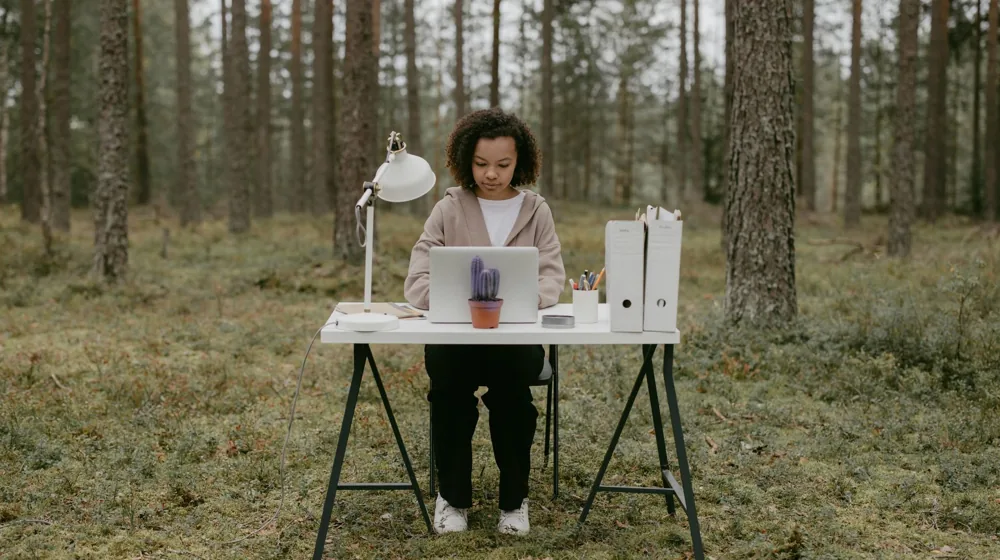

일도 쉬엄쉬엄, 사찰 와이파이 업무환경 예약부터 핵심 준비물까지
사진: Thai Nguyen / Pexels (무료 이미지, 출처 표기)
사찰 워케이션, 고요 속 업무 집중의 새로운 가능성

고요한 자연 속에서 업무에 집중하며 휴식까지 취할 수 있다면 어떨까요? 최근 템플스테이가 단순한 휴식을 넘어 '워케이션'(Work+Vacation) 장소로 주목받고 있습니다. 사찰의 평화로운 환경과 안정적인 와이이파이를 활용해 업무 효율을 높이고 심신을 재충전하려는 분들이 늘고 있습니다. 이 글에서는 사찰에서 와이파이와 업무 환경을 활용한 워케이션을 계획하는 방법부터 필요한 준비물, 그리고 꼭 알아야 할 유의사항까지 자세히 안내해 드립니다.
나에게 맞는 사찰 찾기: 업무환경 제공 여부 확인
모든 템플스테이가 업무 환경을 제공하는 것은 아닙니다. 따라서 나에게 맞는 사찰을 신중하게 선택하는 것이 중요합니다. 템플스테이 통합 정보센터(koreatemple.net) 홈페이지에 접속하면, 검색 필터에서 '업무환경 제공' 등의 옵션을 확인하거나, 각 사찰의 프로그램 상세 내용을 꼼꼼히 살펴보아야 합니다.
특히 다음 사항들을 중점적으로 확인하세요:
- 와이파이(Wi-Fi) 유무 및 속도: 안정적인 업무를 위해 필수적입니다.
- 개인 업무 공간: 독립된 공간에서 집중할 수 있는지, 혹은 공용 공간을 활용하는지 확인합니다.
- 책상 및 의자: 장시간 업무를 위한 편안한 가구 비치 여부를 살펴봅니다.
- 전원 콘센트: 노트북, 휴대폰 등 전자기기 충전을 위한 충분한 콘센트가 있는지 확인합니다.
일부 사찰은 아예 '워케이션 특화' 프로그램을 운영하기도 하므로, 이런 프로그램을 우선적으로 찾아보는 것이 좋습니다.
사찰 와이파이·업무환경 템플스테이 예약 방법
사찰 워케이션을 위한 예약 절차는 일반 템플스테이와 크게 다르지 않지만, 업무 환경 관련 사항을 더욱 면밀히 확인해야 합니다. 2026년 10월 기준, 일반적인 예약 과정은 다음과 같습니다.
- 템플스테이 통합 정보센터 접속: (koreatemple.net)
- 프로그램 검색 및 필터 적용: '나홀로 휴식', '체험형/휴식형', 또는 '업무환경 제공' 등의 키워드로 검색하여 원하는 사찰을 찾습니다.
- 사찰별 프로그램 상세 정보 확인: 와이파이, 업무 공간, 숙소 형태, 식사 방식, 참가비 등을 꼼꼼히 확인합니다.
- 날짜 선택 및 인원 지정: 원하는 날짜에 예약 가능한지 확인하고 인원을 선택합니다.
- 온라인 예약 및 결제: 안내에 따라 예약 정보를 입력하고 참가비를 결제합니다.
- 예약 확정 및 안내사항 수신: 예약이 확정되면 문자로 상세 안내를 받게 됩니다. 입소 전 다시 한번 준비물과 유의사항을 확인합니다.
정확한 예약 과정과 각 사찰의 세부 규정은 변경될 수 있으므로, 반드시 예약 전 해당 사찰의 공식 홈페이지나 통합 정보센터에서 최신 정보를 확인하시길 권장합니다.
효율적인 워케이션을 위한 준비물과 유의사항
사찰에서의 워케이션을 최대한 활용하기 위해 다음 준비물과 유의사항을 참고하세요.
필수 준비물 체크리스트
워케이션 시 유의할 점
- 사찰의 규칙 준수: 사찰은 종교 시설이므로 정숙하고 예의 바른 태도를 유지해야 합니다. 정해진 시간 외 과도한 전자기기 사용은 자제합니다.
- 디지털 디톡스 고려: 업무 시간에는 집중하되, 휴식 시간에는 휴대폰이나 인터넷 사용을 줄이고 자연을 느끼는 시간을 가져보세요.
- 공용 공간 에티켓: 다른 참가자들을 위해 공용 공간(식당, 휴게실 등)에서는 소음에 특히 유의해야 합니다.
- 와이파이 속도 편차: 사찰마다 와이파이 속도와 안정성이 다를 수 있습니다. 중요한 화상 회의 등에는 모바일 핫스팟을 준비하는 것이 안전합니다.
궁금증 해소: 사찰 워케이션 자주 묻는 질문
Q1: 사찰 와이파이 속도는 어느 정도인가요?
A1: 사찰마다 편차가 큽니다. 일반적인 인터넷 검색이나 문서 작업에는 무리가 없지만, 대용량 파일 전송이나 고화질 스트리밍, 안정적인 화상 회의에는 부족할 수 있습니다. 예약 전 사찰에 직접 문의하여 확인하는 것이 가장 좋습니다.
Q2: 꼭 개인실에서만 업무를 할 수 있나요?
A2: 아닙니다. 일부 사찰은 개인실 내 업무 공간을 제공하지만, 다른 곳은 공용 공간이나 별도로 마련된 업무 공간에서 노트북 사용을 허용하기도 합니다. 프로그램 상세 설명을 확인하거나 사찰에 문의하세요.
Q3: 업무 외 활동 참여는 필수인가요?
A3: 워케이션 프로그램의 성격에 따라 다릅니다. 휴식형 템플스테이는 자유로운 편이지만, 일부 사찰은 예불이나 공양(식사) 등 정해진 시간에 참여를 권장하기도 합니다. 프로그램 내용을 확인하여 자신의 스타일에 맞는 것을 선택하세요.
마무리: 고요함 속에서 나를 찾는 워케이션
사찰 워케이션은 단순히 장소를 바꾸어 일하는 것을 넘어, 삶의 균형을 찾고 내면의 평화를 얻는 특별한 경험이 될 수 있습니다. 복잡한 도시를 벗어나 자연과 고요함 속에서 업무에 집중하고, 자신을 돌아보는 시간을 가져보세요. 사찰의 고유한 분위기 속에서 새로운 영감을 얻고, 더욱 충전된 모습으로 일상에 복귀할 수 있을 것입니다. 망설이지 말고 지금 바로 나에게 맞는 사찰 워케이션을 탐색해 보시길 바랍니다.
🔗 이 글도 함께 보면 좋아요: 종가 예약 플랫폼 초보자 안내: 놓치면 아쉬울 전통 문화 경험, 3단계로 완벽 가이드
관련 추천 상품
템플스테이 워케이션, 노트북 스탠드, 소음 제거 헤드폰 관련 인기 상품 보러가기
이 포스팅은 쿠팡 파트너스 활동의 일환으로, 이에 따른 일정액의 수수료를 제공받습니다.